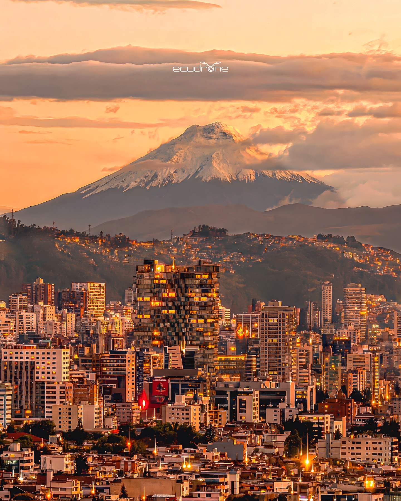

Maria
&
Daniel
19 · Diciembre · 2026
Quito, Ecuador
—
días para la boda

19 de Diciembre, 2026
Estamos muy emocionados de celebrar este día tan especial con ustedes. Aquí está nuestro programa de boda.
Gracias por ser parte de un momento tan importante en nuestras vidas. ¡Estamos muy emocionados de celebrar juntos!
Cómo llegar

📷 InstagramRecomendamos alojarse en Quito o sus alrededores. La ciudad combina una arquitectura colonial espectacular con modernos barrios gastronómicos, naturaleza volcánica a su alrededor y un clima primaveral durante todo el año. Diciembre es especialmente festivo y luminoso — el momento perfecto para visitarla.
Cómo llegar desde…
Donde alojarse


Este hotel ofrece una tarifa especial para los invitados de la boda. Menciona la boda al contactarles.


Quito te espera
Aprovechen su visita para descubrir una ciudad que sorprende en cada esquina. Aquí están nuestros lugares favoritos — los mismos que queremos compartir con ustedes.
Visítenlo de mañana para evitar las multitudes y aprovechen la luz dorada de las primeras horas. Un guía local lo hace aún más especial.
Recomendamos especialmente asistir en un día de liberación — pregúntenles con antelación cuándo es el próximo. Es mágico.
📷 @jardinaladoPara quienes vienen desde Madrid: busquen su gran mural en la Terminal 4 de Barajas antes de embarcar. Es un homenaje a la herencia indígena, a los mitos y a la cultura latinoamericana — una despedida perfecta antes del vuelo a Quito.
Combínenlo con una visita al cráter del volcán Pululahua, a solo 10 minutos, o con las ruinas prehispánicas de Rumicucho y el santuario de Catequilla.
Vayan por la mañana para evitar las nubes de la tarde. Lleven chaqueta aunque en Quito haga sol — en la cima el clima cambia rápido.
Vengan sin prisa y sin ruta fija. La Armenia premia a los que se pierden un poco.
Véanlo de tarde, cuando la luz del valle cae sobre el río y el tiempo parece detenerse. Lleven algo para picar y sin prisa. Y si ven al guardia de seguridad con su bastón — es inofensivo, pero tiene un parecido sospechoso con una falsa coral.
Dónde comer
Deslicen para ver todos nuestros restaurantes favoritos.
Cada invitado recibió un código único. Introdúcelo aquí para confirmar tu asistencia.

Nos hace mucha ilusión que nos acompañen en este día tan especial para nosotros. Les agradeceríamos con todo nuestro corazón si desean contribuir para nuestra luna de miel. Pueden hacerlo a través de nuestras cuentas bancarias:
Cuentas bancarias
Les pedimos con mucho cariño que no traigan regalos físicos a la celebración — el espacio en la maleta de vuelta a Madrid es nuestro mayor enemigo 🧳